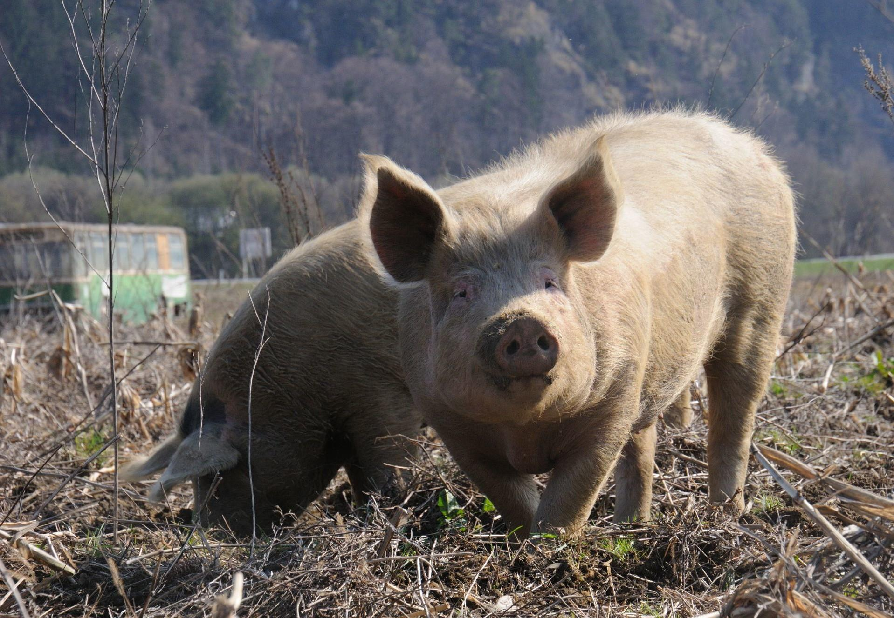

this is the first animal

კატები მოხდენილი და დამოუკიდებელი ცხოველები არიან. ისინი ხშირად შინაურ ცხოველებად გვყავს. საქართველოში კატა სითბოსა და სიმშვიდესთან ასოცირდება.
this is the second animal
ღორის პატარა როლი დიდებულია. ისინი ჭკვიანები და სოციალური ცხოველები არიან. ღორებს ხშირად სოფლის მეურნეობაში იყენებენ. საქართველოში ღორი ტრადიციული საკვების ნაწილია.